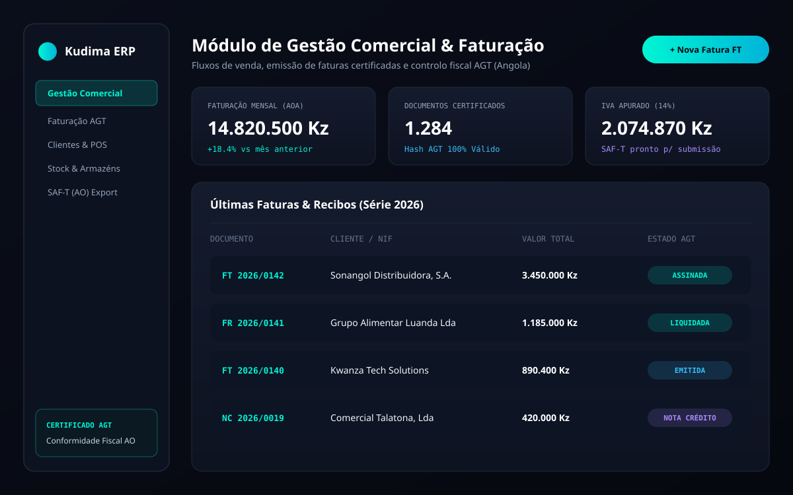

01
UI/UX • ERP & CONFORMIDADE AGT
Kudima ERP
Módulo de Gestão Comercial & Faturação Certificada (Angola)
Design de interface e arquitetura de fluxos de vendas, emissão de documentos comerciais e faturação estruturados em total conformidade com as normas fiscais da AGT (Administração Geral Tributária de Angola). Focado em velocidade operacional no ponto de venda, clareza de impostos (IVA/SAF-T) e redução de erros de emissão.
UI/UX
SaaS / ERP
Conformidade AGT
Design System
[ ERP COMERCIAL • AGT ANGOLA ]
